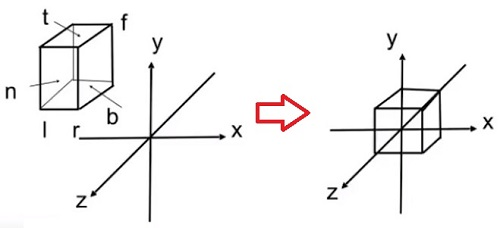

Games101笔记|MVP变换矩阵推导
本文是games101课程的第3，4课的相关笔记，这篇内容对于CG非常的重要！！！特别是推导的过程，非常有必要手推一遍！。所谓的MVP变换就是：
model-view-project变换。本文中使用的向量均表示的是列向量，在公式推导的过程中要注意第一点。
首先我们回想下我们在拍班级毕业照的时候都是什么样的情形，首先学生和老师都站好（Model），然后摄像师选定好一个合适的位置，合适的角度摆好照相机（View）, 最后摄像师按下快门（Projection）. 这个过程中就是完整的使用了MVP变换。
1. 模型矩阵（Model）
模型矩阵就是对模型进行变换，一般常见的有旋转，平移或者拉伸这些变换，在3D空间中，使用4x4的矩阵来表示变换的矩阵。
例如，如果我们对模型进行绕Y轴旋转，那么就可以用矩阵表示为：
$$
\begin{pmatrix} \cos\alpha&\sin\alpha&0&0 \\
-\sin\alpha&\cos\alpha&0&0 \\
0&0&1&0 \\
0&0&0&1
\end{pmatrix}
$$
2. 视图矩阵（View）
$$
\begin{pmatrix} 1&0&0&-eyePos[0] \\
0&1&0&-eyePos[1] \\
0&0&1&-eyePos[2] \\
0&0&0&1
\end{pmatrix}
$$
3. 投影矩阵（Projection）
投影分为正交投影和透视投影，正交投影实用在建筑图设计这样的情况下，但是在我们实际的生活中，人眼看到的情况是透视投影。透视投影具有“近大远小”的特点。
3.1 正交投影矩阵
正交投影矩阵的视锥体是一个长方体$[l,r], [b,t], [f,n]$，我们要把这个长方体转换到一个正方体$[-1,1], [-1,1], [-1,1]$中，如图。

第一步平移，计算出长方体的中心点为$((l+r)/2, (b+t)/2, (f+n)/2)$，然后将中心点移动到原点，因此平移矩阵为:
$$M_{translate} = \begin{pmatrix} 1&0&0&-(l+r)/2 \\
0&1&0&-(b+t)/2 \\
0&0&1&-(f+n)/2 \\
0&0&0&1
\end{pmatrix}$$
第二步缩放，从$[l,r]$缩放到$[-1,1]$，缩放系数为$2/(r-l)$, 同理可得另外两个缩放系数，因此缩放矩阵可以写成：
$$M_{scale} = \begin{pmatrix} 2/(r-l)&0&0&0 \\
0&2/(t-b)&0&0 \\
0&0&2/(n-f)&0 \\
0&0&0&1
\end{pmatrix}$$
所以正交投影矩阵$M_{ortho} = M_{scale} * M_{translate}$.
3.2 透视投影矩阵
透视投影矩阵的视锥体是一个平头截面四棱椎，其中近平面为$z=n$，远平面为$z=f$。我们要把这个视锥体转换到一个正方体$[-1,1], [-1,1], [-1,1]$中。可以先把远平面压缩，把视锥体压缩成一个长方体，然后再通过正交投影矩阵变换到正方体中。所以我们现在需要解决的就是怎么把这个视锥体压缩成长方形，要做的就是下图中的变换。
在把视锥体压缩成长方体的过程中，我们规定三个原则：
- 近平面的所有点坐标不变.
- 远平面的所有点坐标z值不变 都是f.
- 远平面的中心点坐标值不变 为(0,0,f).
对于视锥体内的任意一点$(x,y,z)$，压缩以后的$x,y$坐标应该与近平面上对应的点相同，解上图中的相似三角形可以得到: $y\prime = ny/z, x\prime = nx/z$。 因此对于$(x, y, z, 1)$一点，它在视锥体压缩以后坐标应该为$(nx/z,ny/z,z\prime(unkonwn),1)$。这里的$z\prime$的值我们还不知道，这里先不讨论。也就是说我们现在要寻找一个变换矩阵把空间中的点进行如下的变换：
也就是我们现在需要找到一个矩阵$M_{persp->ortho}$，使得上面的转换成立。
假设矩阵的第一行为$A,B,C,D$。可以得到等式$Ax+By+Cz+D = nx/z$。
然后我们发现这个等式好像很难求，如果让$A = n/z$，其他等于0，的确可以得到结果。
但是矩阵的值应该是常数，$n/z$是个变量。
而其他的结果也很难写出来，同时矩阵的第二行也会有同样的问题 $Ex+Fy+Gz+H = ny/z$，也很难求。
所以我们换一种方法，前面根据已学知识可以知道$(x,y,z,1)$与$(kx,ky,kz,k!=0)$这两个点是完全等价的点，
所以我们让$k$取$z$可以把坐标$(nx/z,ny/z,unknow,1)$变为$(nx,ny,still unknow,z)$。
$$M^{(4\times4)}_{persp->ortho} \cdot \begin{pmatrix} x \\
y \\
z \\
1
\end{pmatrix} = \begin{pmatrix} nx \\
ny \\
unknown \\
z
\end{pmatrix}$$
也就是我们需要找到矩阵$M_{persp->ortho}$，使得上面的转换成立。
现在就变简单了，$Ax+By+Cz+D = nx$，求出 $A=n,B=C=D=0$
$Ex+Fy+Gz+H = ny$，求出$F=n,E=G=H=0$
$Mx+Ny+Oz+P = z$，求出$O=1,M=N=P=0$。
$$
M_{persp->ortho} = \begin{pmatrix} n&0&0&0 \\
0&n&0&0 \\
?&?&?&? \\
0&0&1&0
\end{pmatrix}
$$
于是，我们求出了矩阵的其中三行，只剩下第三行是未知的。
然后我们想下之前的三个原则，其中一个，近平面的所有点坐标不变。
也就是点$(x,y,n,1)$通过矩阵$M_{persp->ortho}$变换后，应该还是等于$(x,y,n,1)$。
$$
\begin{pmatrix} n&0&0&0 \\
0&n&0&0 \\
?&?&?&? \\
0&0&1&0
\end{pmatrix} \cdot \begin{pmatrix} x \\
y \\
n \\
1
\end{pmatrix} = \begin{pmatrix} x \\
y \\
n \\
1
\end{pmatrix}
$$
对于第一二四行，我们写出等式
$$nx+0y+0n+0\cdot1=x \\
0x+ny+0n+0\cdot1=y\\
0x+0y+1n+0\cdot1=1$$
很明显这是有问题的，因为n应该是任意常数，但是现在只有在n等于1时，一二四行的运算才成立
所以我们根据前面的方法，再把$(x,y,n,1)$都乘以一个n等价变为$(nx,ny,n*n,n)$。
这样转换就变成了
$$
\begin{pmatrix} n&0&0&0 \\
0&n&0&0 \\
?&?&?&? \\
0&0&1&0
\end{pmatrix} \cdot \begin{pmatrix} x \\
y \\
n \\
1
\end{pmatrix} = \begin{pmatrix} nx \\
ny \\
n^2 \\
n
\end{pmatrix}
$$
对于第一二四行，我们写出等式
$$
nx+0y+0n+0\times 1=nx, \\
0x+ny+0n+0\times 1=ny, \\
0x+0y+1n+0\times 1=n
$$
完美成立。现在我们可以安心的求第三行了。
设第三行的四个数分别为ABCD
可以获得等式 $Ax+By+Cn+D = n*n$。
明显$A=0,B=0$
$$Cn+D = n*n (式1)$$
我们接下来考虑第三个原则，远平面的中心点坐标值不变, 为$(0,0,f)$
同样为了保证之前求的矩阵一二四行成立，我们需要把 $(0,0,f,1)$ 写成 $(0,0,f*f,f)$
$$
\begin{pmatrix} n&0&0&0 \\
0&n&0&0 \\
0&0&?&? \\
0&0&1&0
\end{pmatrix} \cdot \begin{pmatrix} 0 \\
0 \\
f \\
1
\end{pmatrix} = \begin{pmatrix} 0 \\
0 \\
f \cdot f \\
f
\end{pmatrix}
$$
$$Cf+D = f*f（式2）$$
联立式1式2，解得
$$
C = n+f
D = -nf
$$
终于，我们求得了$M_{persp->ortho}$矩阵为
$$M_{persp->ortho} =
\begin{pmatrix} n&0&0&0 \\
0&n&0&0 \\
0&0&n+f&-nf \\
0&0&1&0
\end{pmatrix}
$$
也就是通过这个矩阵，我们可以把原来的透视投影的视锥体压缩为正交投影的视锥体(长方体)
最后我们再乘上一开始求出来正交投影矩阵$M_{Morth}$就得到了透视投影矩阵:
$$M_{persp} = M_{Morth} \cdot M_{persp->ortho}$$
课上的思考问题，平截头体压缩成长方体以后，内部的点的z值是更偏向于近平面还是更偏向于远平面呢？
这里的自己想的推导方式，感觉不是很严谨，但是可以得到结果。
对于点$(x,y,z,1)$，我们通过$M_{persp->ortho}$计算第三行，可以得到 $$ z′ = (n+f)*z - nf $$ 计算第四行，可以得到 $$ w′ = z $$ 所以转换完成后新的z应该为 $$ f(z) = z′/w′ = n+f-nf/z $$ 验算一下
当$z = n$时，$f(n) = n+f-nf/n = n$
当$z = f$时，$f(f) = n+f-nf/f = f$
也满足了我们上面提到的，近平面和远平面上的点，z值不发生变化
我们假设$n,f$都是绝对值，视锥体内部的点都满足 $ 0<n<z<f $
问题也就变成了，当$0<n<z<f$时，$n+f-nf/z$跟$z$的大小关系
画出大致的函数图像，可以看出z从n变化的f的过程中，$f(z)$从$n$变化到$f$的过程是逐渐变慢的，在$n-f$这段区域中，$f(z)$是永远大于$g(z)$的，即当$0<n<z<f$时，$n+f-nf/z>z$
也就是说，视锥体内的点被挤压的更偏向了远平面f。
大部分资料跟书上推导出来的透视投影矩阵一般是由fov,aspect,far,near四个参数数定义的，我们现在来看下我们前面求的透视投影矩阵转化成由上面四个参数定义的形式。
首先来看下四个参数：
- fov: 视场角
- aspect: 宽高比
- far: 远平面
- near: 近平面
我们尝试使用这是个数来表示我们前面的$n,f,t,b,r,l$, 易知: $n=near, f=far$

解三角形得
$t=n\cdot tan(fov/2) \\b=-n\cdot tan(fov/2)$
故$r=aspect\cdot n\cdot tan(fov/2) \\l=-aspect\cdot n\cdot tan(fov/2)$
现在我们就知道了上面的六个参数如何用这四个参数来表示了
然后我们代入重新写一下上面的矩阵$M_{ortho} = M_{scale}\cdot M_{translate}$
$$\begin{pmatrix} \frac{2}{r-l}&0&0&0 \\
0&\frac{2}{t-b}&0&0 \\
0&0&\frac{2}{n-f}&0 \\
0&0&0&1
\end{pmatrix} \cdot \begin{pmatrix} 1&0&0&-\frac{l+r}{2} \\
0&1&0&-\frac{b+t}{2} \\
0&0&1&-\frac{f+n}{2} \\
0&0&0&1
\end{pmatrix} = \begin{pmatrix} \frac{\cot(fov)/2}{aspect \cdot n}&0&0&0 \\
0&\frac{\cot(fov)/2}{n}&0&0 \\
0&0&\frac{2}{n - f}&0 \\
0&0&0&1
\end{pmatrix} \cdot \begin{pmatrix} 1&0&0&-\frac{l+r}{2} \\
0&1&0&-\frac{b+t}{2} \\
0&0&1&-\frac{f+n}{2} \\
0&0&0&1
\end{pmatrix}
$$
那么$M_{ortho}$可以得到：
$$
M_{ortho} = \begin{pmatrix} \frac{\cot(fov)/2}{aspect \cdot n}&0&0&0 \\
0&\frac{\cot(fov)/2}{n}&0&0 \\
0&0&\frac{2}{n - f}&-\frac{n + f}{n - f} \\
0&0&0&1
\end{pmatrix}$$
最后，由$M_{persp} = M_{ortho}*M_{persp->ortho}$求解$M_{persp}$ ：
$$
M_{persp} =
\begin{pmatrix} \frac{\cot(fov)/2}{aspect \cdot n}&0&0&0 \\
0&\frac{\cot(fov)/2}{n}&0&0 \\
0&0&\frac{2}{n - f}&-\frac{n + f}{n - f} \\
0&0&0&1
\end{pmatrix} \cdot \begin{pmatrix} n&0&0&0 \\
0&n&0&0 \\
0&0&n+f&-nf \\
0&0&1&0
\end{pmatrix} = \begin{pmatrix} \frac{\cot(fov)/2}{aspect}&0&0&0 \\
0&\cot(fov)/2&0&0 \\
0&0&\frac{n+f}{n-f}&-\frac{2nf}{n-f} \\
0&0&1&0
\end{pmatrix}
$$
至此，整个求解过程完成。:)
呼，编写LaTex公式真麻烦，但是显示确实漂亮！
- 原文作者：Binean
- 原文链接：https://bineanju.gitee.io/blog/post/20200215Games101_02/
- 版权声明：本作品采用知识共享署名-非商业性使用-禁止演绎 4.0 国际许可协议进行许可，非商业转载请注明出处（作者，原文链接），商业转载请联系作者获得授权。